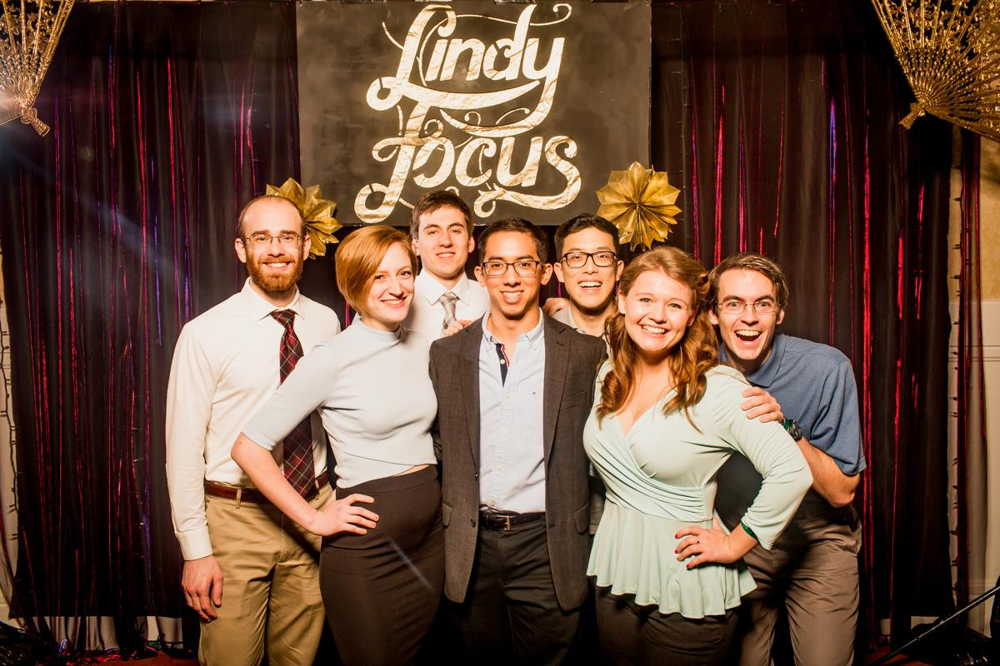

A Nostalgic Drink
Ingredients
- 0.5 oz Peach liqueur or Peach Schnapps (~25 ABV)
- 2 oz Prosecco
- 1 oz Anejo Espolon Tequila
- Fresh limes
- Flaky salt for rim job
- Optional mint sprig for garnish
Instructions
Cut a lime in half and squeeze to get ~0.5oz of fresh juice. Take a chilled glass and rub the lime carcass around the rim. Spread flaky salt on a plate and press the glass into it to coat.
Combine 0.5oz peach liqueur, 0.5oz fresh squeezed lime juice, and 1oz Anejo Espolon tequila in a shaker with ice. Shake until well chilled then strain into the prepared glass. Top off with 2oz prosecco (or more if you’d like) and stir.
Add a sprig of mint for a finished look. Sip and reminisce about the glory days.
Backstory
I created this cocktail to combine old and new memories into a bright and refreshing drink that is easy to make. Prosecco and sweet and bubbly and serves as a great compliment to the most important flavors in this cocktail.
The peach liqueur is sweet and has an almost artificial flavor to it, very strongly reminding me of the half-gallon jugs of peach tea we’d get after hours of dancing in Philadelphia. These trips were some of the earliest memories I have with Amber and marked the beginning of a very active year of dancing, travelling, and becoming close friends. The days of practicing Lindy Hop, playing boardgames, and socializing at The Manor with Amber, Jennie, and Steve (the first and only members of the prestigious TWYDITWTYDI performance group) are among my fondest memories.
Anejo Espolon tequila is from an unforgettable and much needed two week visit in October 2020. On one of the final days of the visit, Amber got me thoroughly plastered on this particular brand of tequila while we played hours of Among Us. The evening ended with Amber and Jennie yelling “What??” and “WATER” at me in Korean as they hunkered down to binge Crash Landing on you until 8am as I passed out.